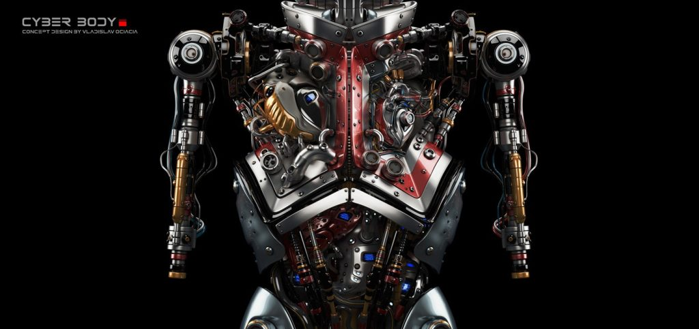

Overview
The paper “From Cyborg to Cyberbodies” written by Andrea Gaggioli and his colleagues explores how advancements in medical technology have reshaped our understanding of the human body. As a student majoring in creative computing, this article has prompted me to reflect on the evolving relationship between technology and the human body, as well as the ethical and practical implications brought about by these changes.

The article introduces two concepts of the body influenced by technological advancements: the cyborg and the cyberbody. The cyborg represents the integration of the biological and the mechanical, while the cyberbody is a virtual entity composed of data. These concepts demonstrate how technology mediates our perception of the body. For instance, the cyborg maintains a connection with organic processes, whereas the cyberbody fully digitizes the human body, and this transformation redefines identity and ways of interaction. This coincides with what I study in creative computing, where bridging the physical and digital worlds is a core theme. It inspires me to explore how to integrate tactile and virtual elements in my projects, creating interfaces that enhance the experience without weakening the connection to the physical world.
The authors describe the emerging paradigm of Ambient Intelligence (AmI), in which ubiquitous computing and intelligent interfaces are seamlessly embedded in daily life. This vision encompasses wearable devices and smart textiles for health monitoring, forming what the authors call the “transparent body”, which represents the patient’s disembodied image through real – time physiological data. The concept of the “transparent body” brings about both exciting possibilities and concerns. On the one hand, it could revolutionise healthcare by enabling personalised, continuous care and remote diagnosis. On the other hand, reducing an individual to biological data may dehumanise medical care. This duality highly coincides with the discussions in my courses regarding the balance between functionality and humanisation in technological design.
The article highlights significant ethical issues, especially the risk of dehumanisation that patients may face when they become “transparent bodies”. It also warns that the prevalence of self – diagnosis may increase patients’ anxiety or lead to misinterpretation of health data. These reflections make me aware of the importance of user – centred design in creative computing. Technology not only needs to function effectively but also respect users’ emotional and social needs. For example, I’m inspired to design systems that can provide meaningful insights while maintaining humanistic care, ensuring that users feel cared for rather than objectified.
Reading “From Cyborg to Cyberbodies” has given me a deeper understanding of the intersection among technology, medicine, and human identity. This article highlights the transformative power of technology while warning of the risks of alienation or the reduction of human experience it may bring.